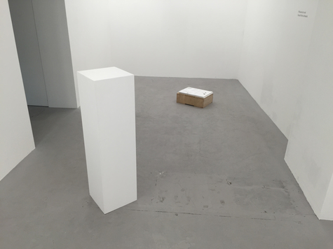
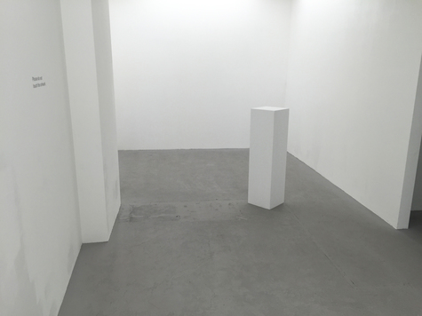
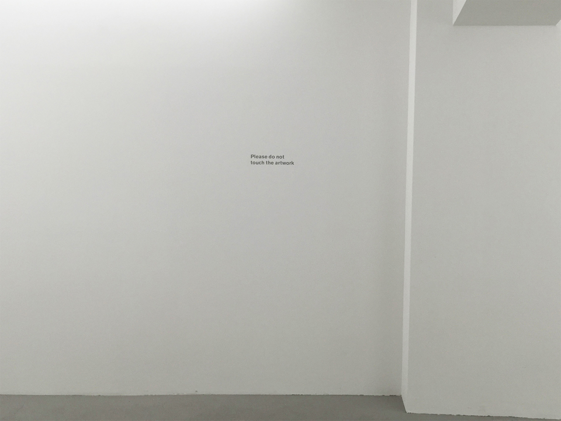
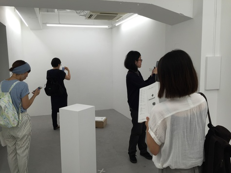
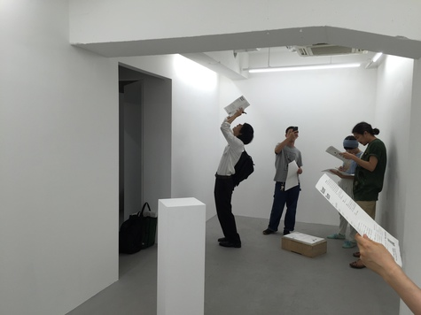

The exhibition Vacant Room
was held on 17-29 July, 2015
at SOBO, Jimbocho Tokyo
Participated artists:
Ariana Huerta / Sakura Kondo / Takahiro Kawaguchi / Highyuni
Exhibition design and curation:
UCNV
Vacant Room is a group exhibition.
It consists of the use of a smartphone device and the floor plan handout.
There is no artwork in the real space.
Beholders open a url with their own device and look into the spherical photo which shows the artworks within.
The device in their hand coordinates the orientation same as the real space by its compass function.
The exhibition designer planned to corrupt the constitution of a gallery space so that we can see what the exhibiting is.
You can tell that it is just to show the photo. Yes it is. But we will find the corruption of this exhibition is caused by the photography rather than the use of a device. Optical instruments always dismantle the dimension of the space and time, and make it as a projection to a plane. And obviously this optical corruption of the extensity is also happened in our eye balls.
A photography is a result of peeping into the real space by a camera. In the Vacant Room we peep into the photography using the device. In such a situation, echoes of dismantled dimenstions will arise.